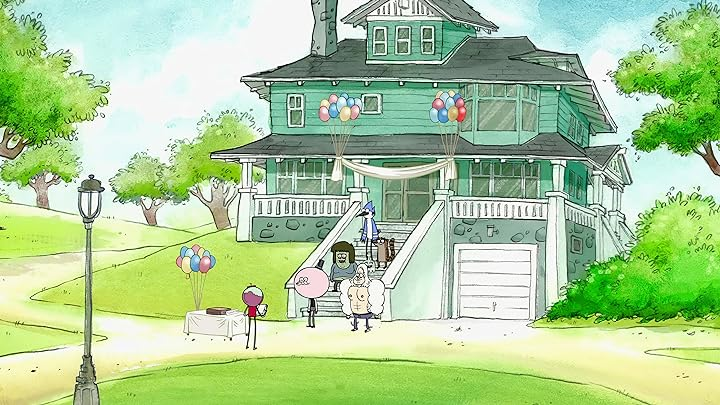
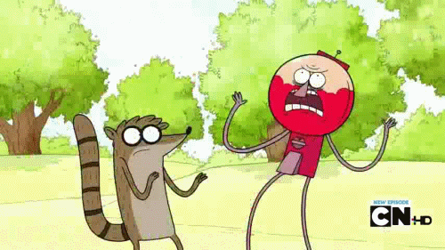

Uma festa de Aniversário está acontecendo no Parque
e Benson pede para todos fazerem um trabalho.
-Ok pessoal, como todos vocês devem saber, hoje é o aniversário
do senhor Mallard, por isso, eu deixarei cada um do vocês encarregado
da arrumação da festa

Mordecai e Rigby pegam a tarefa mais chata na visão deles: Arrumar as Cadeiras
Benson:Mordecai, Rigby, vocês cuidarão da organização das cadeiras
Mordecai e Rigby: Ah, qualé Benson, não dá pra arrumar um trabalho melhor?
Benson: Não, façam o seu trabaho OU ESTARÂO DESPEDIDOS!!!